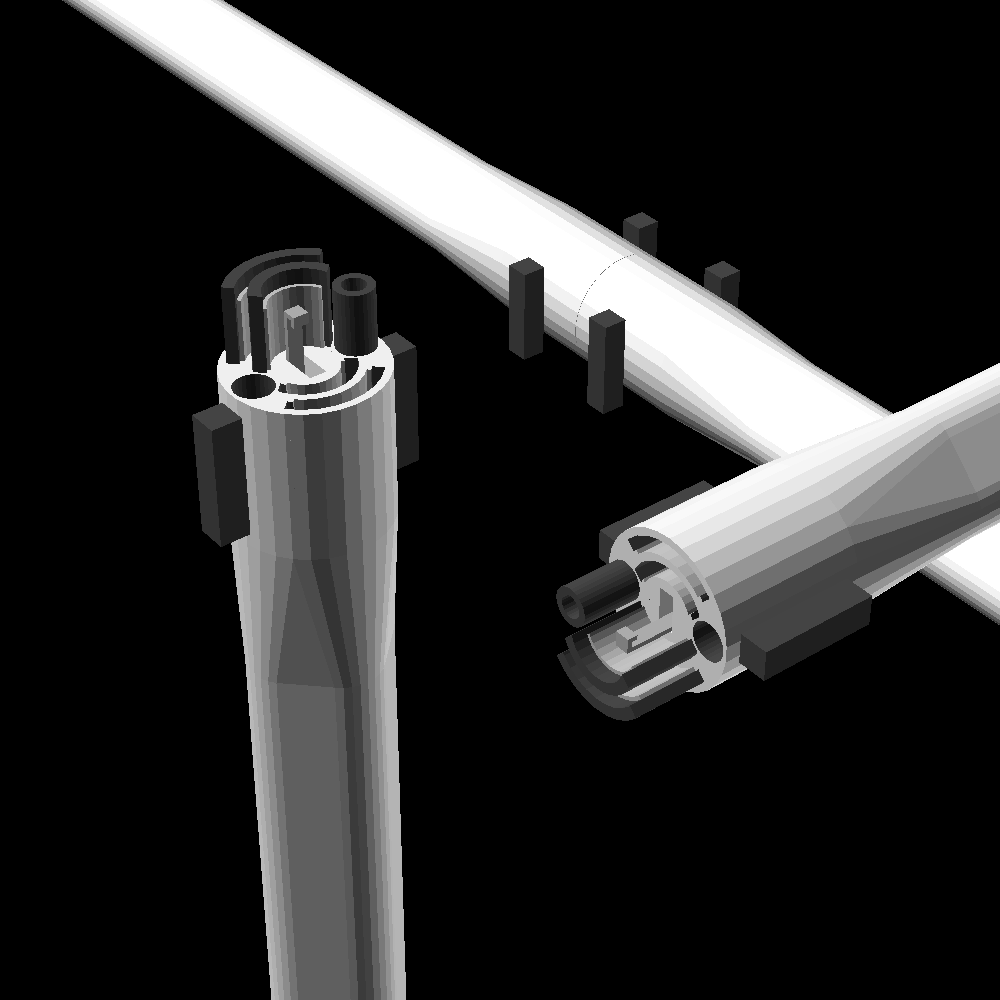

link to this page
Felicity Techtree: Power infrastructure

Power infrastructure in the Felicity tech tree operates on 576 volts of direct current.
Electricity is generated from solar energy and stored in batteries without any conversion along the way.
Management of both electrical power and thermal power (ie. waste heat) are considered functions of the power infrastructure.
Finespun standard power+coolant connector
The common power connector provides both electricity and coolant.
The plug is self-similar, and plugs directly into an exact copy of itself.
When plugged in, handles at the sides of the plug must be turned to enable coolant flow, which at the same time engages the locking hook that keeps the two plugs together - in this way cables can't easily come apart while the coolant valves are open.
A tiny bit of spillage is still expected when disconnecting cables, but the geometry of the plug makes it very hard for water to bridge the gap between the positive and negative plates.
The conductors in the cable are 20mm in diameter and made of kamacite wires, which is cheap but much more resistive than copper, giving the cable a 2-way resistance of a bit under 4.9mΩ per metre.
The coolant lines are also 20mm in diameter internally, and both the insulation of the cable as well as the coolant lines themselves are made of plain 5mm thick polyethylene.
Resistive losses are easily absorbed since the cable also carries coolant, which naturally carries the heat away.
For this reason it is critical that even if a device does not use the coolant, it takes it as input and returns it to maintain the flow of coolant through the cable.
The cable can reliably handle coolant flow rates of 1L/s and amperages up to 175A (which would deliver 100kW but also cause 150W of heating in each metre of the cable from resistive losses - losses scale with square of current and grow linearly with total length of cable).